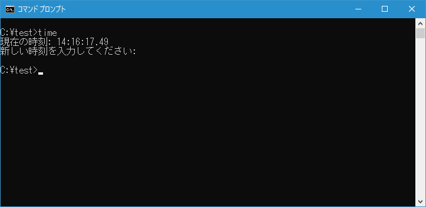
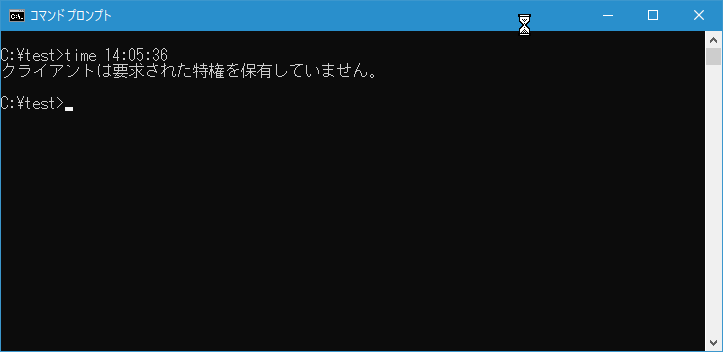
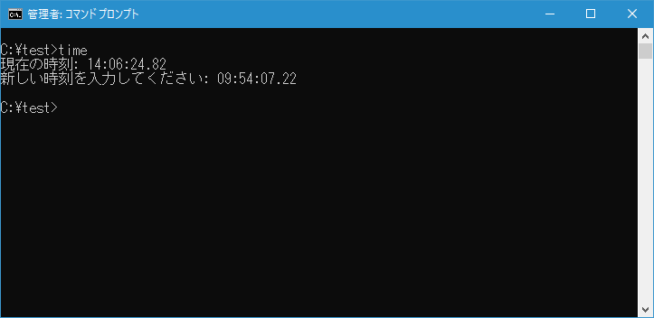

時刻の表示と新しい時刻の設定(TIME)
現在の時刻の表示と新しい時刻を設定をすることができる TIME コマンドの使い方について解説します。
TIMEコマンドの使い方
TIME コマンドを実行すると現在の時刻の表示と、時刻の設定をすることができます。書式は次の通りです。
TIME [/T | 時刻]
それでは使い方を見ていきます。
現在の時刻を表示する
オプション無しで TIME コマンドを実行すると最初に現在の時刻を表示したあと、新しい時刻を入力するように表示されます。
time
時刻の設定を行わない場合は[Enter]キーを押すと時刻の設定を行わずに終了します。

このコマンドで時刻の設定も行う場合は、管理者権限でコマンドプロンプトを起動している必要があります。こちらはあとで確認します。
また TIME コマンドを実行するときに /T オプションを付けて実行すると、単に現在の時刻を表示して終了します。この場合は秒は表示されません。
time /t
時刻を設定する
時刻を別の日付に設定するには、TIME コマンドの引数に設定する時刻を指定して実行してください。指定する形式は次の通りで、時以外は省略すると0が設定されます。
HH:MM:SS.NN
例えば 14時5分36秒 に設定するには次のように実行します。
time 14:05:36
TIME コマンドで時刻の設定を行うには管理者権限が必要となります。管理者ではない状態で TIME コマンドを実行すると「クライアントは要求された特権を保有していません。」と表示されて実行できません。

それでは管理者権限でコマンドプロンプトを起動してから TIME コマンドを実行します。(管理者権限で起動する方法については「管理者権限でコマンドプロンプトを起動する」を参照してください)。
再度 TIME コマンドを /T オプション付きで実行して時刻を確認してみると、先ほど設定した時刻に変更されていることが確認できます。
-- --
TIME コマンドをオプション無しで実行すると現在の時刻を表示したあと時刻の設定画面が表示されます。
time
時刻を設定するには時分秒を指定してから[Enter]キーを押してください。時分秒の指定方法は TIME コマンドの引数に時分秒を指定した書式と同じです。例えば 9時54分7秒22 に設定するには次のように実行します。

再度 TIME コマンドを /T オプション付きで実行して時刻を確認してみると、先ほど設定した時刻に変更されていることが確認できます。
-- --
TIME コマンドを使って現在の時刻を表示したり新しい時刻を設定する方法について解説しました。
( Written by Tatsuo Ikura )

著者 / TATSUO IKURA
初心者～中級者の方を対象としたプログラミング方法や開発環境の構築の解説を行うサイトの運営を行っています。